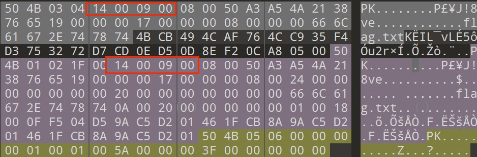
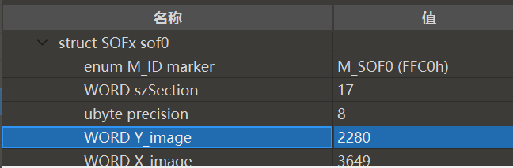
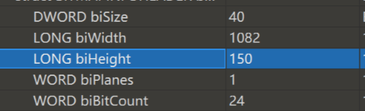

隐写
文本隐写
编码方式
1 | |
可见字符隐写
信息隐藏在可见字符，如空格数量、大小写、标点、特定位置等。
常见方式有：
- 用空格数量代表0或1
- 首字母拼接
- 大小写代表0或1
不可见字符隐写
零宽隐写
零宽度字符是一些不可见的，不可打印的字符。存在于页面中主要用于调整字符的显示格式
一般的文本编辑器中不可见，将文本储存为txt格式，用vim查看可以直接看到其中隐藏的零宽度字符
U+200B零宽度空格符 (zero-width space) : 用于较长单词的换行分隔
U+FEFF零宽度非断空格符 (zero-width no-break space) : 用于阻止特定位置的换行分隔
U+200D零宽度连字符 (zero-width joiner) : 用于阿拉伯文与印度语系等文字中，使不会发生连字的字符间产生连字效果
U+200C 零宽度断字符 (zero-width non-joiner) : 用于阿拉伯文，德文，印度语系等文字中，阻止会发生连字的字符间的连字效果
U+200E左至右符 (left-to-right mark) : 用于在混合文字方向的多种语言文本中（例：混合左至右书写的英语与右至左书写的希伯来语），规定排版文字书写方向为左至右
U+200F右至左符 (right-to-left mark) : 用于在混合文字方向的多种语言文本中，规定排版文字书写方向为右至左
https://offdev.net/demos/zwsp-steg-js
参考：
[转化为二进制的加密]https://zhuanlan.zhihu.com/p/87919817
[转化为Morse编码的加密]https://zhuanlan.zhihu.com/p/75992161
SNOW
SNOW 用于通过在行尾附加空格和制表符来隐藏 ASCII 文本中的消息，即文本隐写
压缩包
1.伪加密
一个zip文件由三部分组成：
压缩源文件数据区、压缩源文件目录区、压缩源文件目录结束标志

zip 压缩源文件目录区的全局方式位标记改为奇数 01 00 或者 09 00，就是伪加密
2.破解
- 字典暴破/掩码攻击/已知明文攻击
工具：ziperello，ARCHPR - CRC32碰撞
CRC32算法通过对输入数据的每个字节运算，生成一个32位的校验和。CRC暴破是基于已知的校验和尝试找出原始输入数据，通过遍历可能的输入数据，可以找到匹配的原始值
图片隐写
文件头隐写
根据16进制查看文件类型，一般是修改了文件格式或要补全文件头
IDAT块隐写
pngdebugger可以检查crc、tweakpng可以对idat块进行操作
工具：pngdebugger、tweakpng
关于什么时候该删除什么idat块？
1.使用tweakpng将图片的idat块合并
2.在kali中使用binwalk检查idat块内的偏移值（合并前、合并后的差值）
3.再回到tweak根据偏移值分离IDAT块，删除多余部分，再保存即可
宽高修改
高度被修改的遮住了部分信息，图片其余部分还可以正常显示
宽度被修改则无法正常显示
一般被修改过宽高的图片在kali中不能正常打开，但在windows中可以打开
png：width为宽，height为高
jpg：Y,X

bmp：LONG biWidth,biHeight

1 | |
文件分离
有时候会把几个文件合并成一个文件，例如在一张图片中隐藏一个压缩包，flag很有可能藏在压缩包中，这时候需要分离文件将压缩包拿出来。
在kali中：
binwalk命令可以检测是否有其他文件存在
foremost命令可以直接分离图片
LSB 最低有效位
工具：stegsolve
仅可对png、bmp无损图片格式使用
LSB 隐写就是修改 RGB 颜色分量的最低二进制位（LSB），每个颜色会有 8 bit，LSB 隐写就是修改了像数中的最低的 1 bit，每个像素可以携带 3 比特的信息